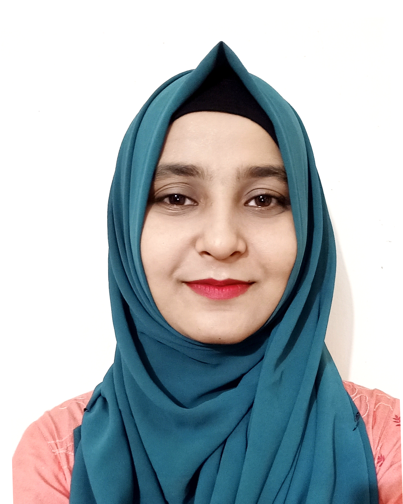

Hi,
I'm
Mst Sabiha Sultana
Educationist
Resume

About
Mst Sabiha Sultana
Educationist | Researcher | Content Developer
Education & Skills
Education
MEd - Pre-primary and Primary Education
CGPA: 3.82 (4th in Department)University of Dhaka (Institute of Education and Research)
01/2023 - 12/2023 | Dhaka, Bangladesh
BEd - Social Science Education
CGPA: 3.84University of Dhaka (Institute of Education and Research)
Stream: Social Science Education
01/2018 - 12/2022 | Dhaka, Bangladesh
HSC - Science
GPA: 5.00Rajabari College, Chapainawabganj
06/2016 - 04/2017
SSC - Science
GPA: 5.00Golabari Girl's High School, Chapainawabganj
01/2013 - 02/2014
Proficiency
Work Experience
1. BGS & ICT Instructor | Mojaru
January 2026 - Present
Conducted engaging online classes for BGS and ICT, ensuring active student participation. Developed and delivered interactive lesson plans tailored to diverse learning needs. Built strong virtual connections with students through creative classroom activities and discussions. Prepared structured teaching materials, including presentations, worksheets, and Google forms. Monitored student progress and provided constructive feedback to improve performance.
2. Research Assistant - Data Transcriber and Translator
November 2024 - March 2025
A study on Women Leadership in School Management. A Study on Effectiveness of Two-year Pre-primary Piloting Program in Primary School.
3. Research Assistant | Bangladesh Youth Leadership Center BYLC
August 2024 - October 2024
Mid-line Study on Building Bridges through Leadership Training (BBLT) and Building Bridges through Leadership Training Junior (BBLTJ).
4. Assistant Teacher | Radiant School and College
June 2024 - December 2024
Conducted class with relevant materials and followed up students' progress by formative assessment. Encouraged students participation in classroom activity to grow confident.
5. Assistant Teacher - Intern | Udayan Higher Secondary School and College
January 2022 - June 2022
Developed and implemented a bilingual syllabus with customized materials and modern teaching tools, enhancing Bengali and English proficiency, increasing student engagement by 20%, improving classroom participation by 30%, and fostering inclusive, interactive, and immersive learning experiences through collaboration and personalized feedback.
Achievements
4th in Department - MEd 2024
Based on M.Ed ResultIER, University of Dhaka
General Scholarship - BEd 2021
Based on B.Ed ResultGiven by University of Dhaka
Certifications
Certificate in Education In Emergency & Refugee Education
Workshop, Organized by UNHCR and IER2022
Certificate in Microsoft Office Applications
Bangladesh Technical Education Board, Dhaka01/2015 - 06/2015
Volunteer Experience
References
Dr Taposh Kumar Biswas
ProfessorDepartment of Pre-primary and Primary Education
Institute of Education and Research
University of Dhaka
Contact: +880 1918-959625
Dr Sumera Ahsan
ProfessorDepartment of Educational Evaluation and Research
Institute of Education and Research
University of Dhaka
Contact: +880 1321-745618